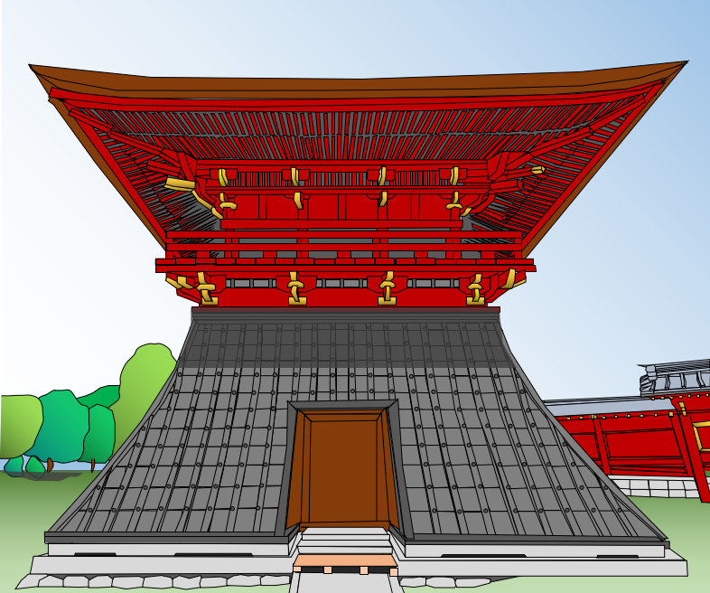

ホーム
研究実績
経歴
北原博幸（トータルシステム研究所社長）の経歴
西暦
学歴
1979 年 4 月
東北大学 工学部 化学工学科 入学
1983 年 3 月
同上 卒業
1983 年 4 月
東北大学大学院 工学研究科 化学工学専攻 博士前期課程 入学
1985 年 3 月
同上 修了
1985 年 4 月
東京大学大学院 工学研究科 化学エネルギー工学専攻 博士課程 入学
1989 年 6 月
同上 修了
学位：工学博士（東京大学）1989 年 6 月
西暦
職歴
1989 年 4 月 ～ 1999 年 12 月
ダイキン工業株式会社
2000 年 4 月 ～ 2000 年 12 月
株式会社 前川製作所
2001 年 1 月 ～ 現在
トータルシステム研究所
2002 年 4 月 ～ 2004 年 3 月
九州芸術工科大学 客員教授
2006 年 4 月 ～ 2013 年 3 月
九州大学 芸術工学部 非常勤講師
2011 年 3 月 ～ 現在
国立文化財機構 東京文化財研究所 客員研究員
2014 年 7 月 ～ 現在
建築物環境衛生管理技術者講習会 教授
2015 年 4 月 ～ 現在
筑波大学 工学システム学類 非常勤講師
2020 年 12 月 ～ 現在
文化庁調査員(文化資源活用課)
西暦
学会活動等
2002 年 4 月 ～ 2005 年 3 月
日本建築学会 中国の住宅におけるエネルギー消費と居住環境問題特別研究委員会 幹事
2002 年 4 月 ～ 2011 年 3 月
日本建築学会 環境工学委員会 アカデミックスタンダードWG（後にアカデミックスタンダード小委員会） 幹事
2011 年 4 月 ～ 2015 年 10 月
日本建築学会 地球環境委員会 アジア地域における建築環境とサステナブル検討小委員会 幹事
2013 年 4 月 ～ 2015 年 3 月
日本建築学会 地球環境委員会 幹事
温風処理を実施した中禅寺鐘楼（絵）
